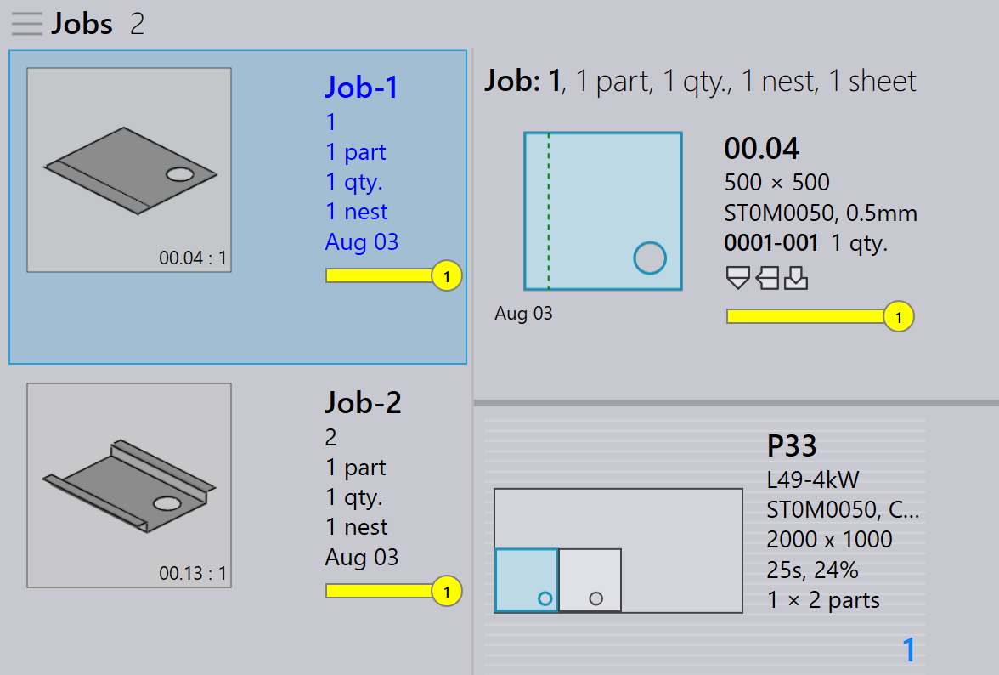

Pengemasan Ulang
TruSmartCAM tidak memiliki modul Pengemasan Ulang tersendiri. Sebaliknya, pengemasan ulang ditangani melalui opsi tingkat pekerjaan yang memberikan fleksibilitas dalam cara komponen digabungkan.
Ada tiga cara untuk melakukan pengemasan ulang.
-
Pengemasan ulang dengan Mix parts from multiple Jobs.
-
Pengemasan Ulang Manual Menggunakan Wizard Interaktif Add Parts.
-
Pengemasan Ulang Manual Menggunakan TecZone.
Pengemasan ulang dengan mix parts from multiple Jobs
-
Untuk mengaktifkan opsi ini, buka factory → settings → Job → Nest settings → Mix parts from multiple Jobs.

-
Ketika diaktifkan, opsi ini memungkinkan komponen dari pekerjaan berbeda dikelompokkan bersama selama auto nesting atau nesting interaktif, menghasilkan pengemasan atau nesting gabungan.
-
Contohnya:
-
Job-1 memiliki 1 komponen, Job-2 memiliki 1 komponen.
-
Dengan Mix parts from multiple Jobs diaktifkan, TruSmartCAM dapat mengemas ulang 2 komponen ini menjadi satu nest yang dioptimalkan.
-

-
Tanpa opsi ini, komponen dari setiap pekerjaan tetap terpisah selama nesting/pengemasan dengan nama tata letak yang berbeda.
-
Pengemasan ulang juga dapat dilakukan secara manual tanpa mengaktifkan opsi ini.
Pengemasan ulang manual menggunakan wizard interaktif add parts
-
Dari tampilan tata letak, pilih komponen yang ingin Anda kemas ulang.
-
Klik kanan komponen dan pilih Add Parts… dari panel tata letak.

-
Ikuti petunjuk dalam wizard untuk menyelesaikan proses pengemasan ulang.
-
Pilih Show other job parts dan tambahkan ke pekerjaan saat ini.

-
Tinjau perubahan dan konfirmasikan pengemasan ulang.

Untuk detail lebih lanjut lihat Add Parts.
Pengemasan ulang manual menggunakan TecZone
-
Buka TecZone dengan mengklik
 .
.

-
Di antarmuka TecZone, klik Add.

-
Sebuah jendela baru muncul di mana Anda dapat memilih komponen yang akan dikemas ulang. Klik Show… lalu pilih Other job parts. Setelah membuat pilihan, klik Pick.

-
Sebuah jendela baru muncul di mana Anda dapat menentukan di mana komponen perlu dikemas ulang.
-
Klik Save changes to TruSmartCAM dan tata letak yang dikemas ulang akan tersedia di TruSmartCAM.